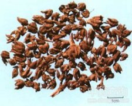

猫爪草

拼音
Māo Zhuǎ Cǎo
别名
小毛茛
来源
本品为毛茛科植物小毛茛Ranunculus ternatus Thunb. 的干燥块根。春、秋二季采挖，除去须根及泥沙，晒干。
生境分布
生于田边、路旁、洼地及山坡草丛中。分布浙江、江苏、安徽、江西、广西、河南、湖北、四川、云南、贵州等地。产河南、江苏、浙江、广西等地。
药材特点
多年生小草本。幼株疏被灰白色的细柔毛，后变秃净或稍具柔毛。块根肉质，纺锤形，常数个聚集。茎高5～15厘米，具分枝；基生叶为3出复叶或3深裂，小叶片卵圆形或阔倒卵形，长0.5～1.5厘米，宽0.5～1厘米，先端3浅裂或齿裂，基部楔形，有时裂成线形或线状披针形，中央裂片较两侧者略大；具叶柄，柄长3～6厘米，基部扩大，边缘膜质；茎生叶互生，通常无柄，3裂，裂片线形，长约1.5厘米，宽约1毫米。花单生于茎端，与叶对生，直径达1.5厘米，花柄长0.5～2厘米，有短细毛：萼片5，长圆形或倒卵形，膜质，绿色，边缘淡黄色，向下反曲，外有细毛；花瓣5，阔倒卵形，黄色，无毛；雄蕊多数，花药长圆形，纵裂，花丝扁平；心皮多数，离生，丛集于膨大的花托上；柱头短小，单一。聚合果球形；瘦果扁卵形，细小，表面淡棕色，平滑，顶端有短喙。花期4～5月。果期5～6月。
性状
本品呈纺锤形，多5～6个簇生，形似猫爪，长3～10mm，直径2～3mm，顶端有黄褐色残茎或茎痕。表面黄褐色或灰黄色，久存色泽变深，微有纵皱纹，并有点状须根痕和残留须根。质坚实，断面类白色或黄白色，空心或实心，粉性。气微，味微甘。
性味
甘、辛，温。
功能主治
散结，消肿。用于瘰疬未溃、淋巴结结核。
用法用量
15～30g，单味药可用至120g。
化学成分
无化学成分数据
药理作用
1：无药理作用数据
摘录
《中国药典》